Moon Phase SVG Test Results
This page displays the generated moon phase SVGs. Each phase shows the illuminated fraction and phase angle.
Complete Grid View
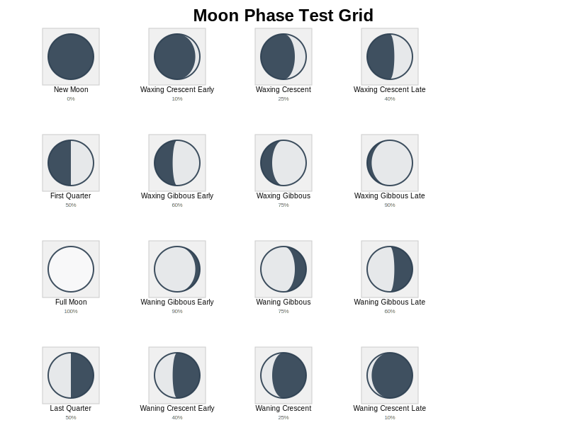
Individual Phases
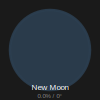
New Moon
0.0% illuminated
0° (Waxing)
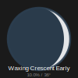
Waxing Crescent Early
10.0% illuminated
36° (Waxing)
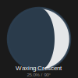
Waxing Crescent
25.0% illuminated
90° (Waxing)
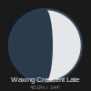
Waxing Crescent Late
40.0% illuminated
144° (Waxing)
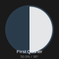
First Quarter
50.0% illuminated
90° (Waxing)
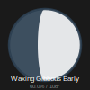
Waxing Gibbous Early
60.0% illuminated
108° (Waxing)
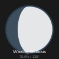
Waxing Gibbous
75.0% illuminated
135° (Waxing)
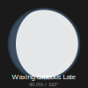
Waxing Gibbous Late
90.0% illuminated
162° (Waxing)
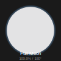
Full Moon
100.0% illuminated
180° (Waxing)
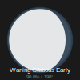
Waning Gibbous Early
90.0% illuminated
198° (Waning)
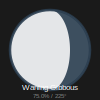
Waning Gibbous
75.0% illuminated
225° (Waning)
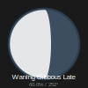
Waning Gibbous Late
60.0% illuminated
252° (Waning)
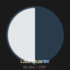
Last Quarter
50.0% illuminated
270° (Waning)
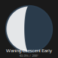
Waning Crescent Early
40.0% illuminated
288° (Waning)
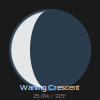
Waning Crescent
25.0% illuminated
315° (Waning)
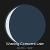
Waning Crescent Late
10.0% illuminated
324° (Waning)